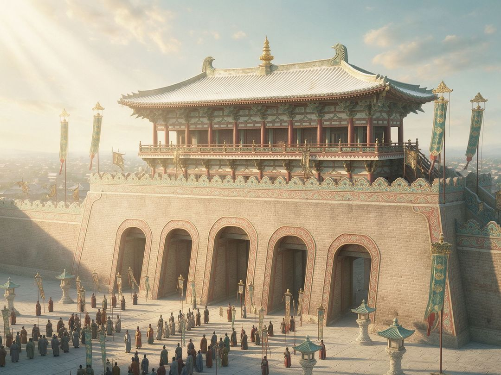
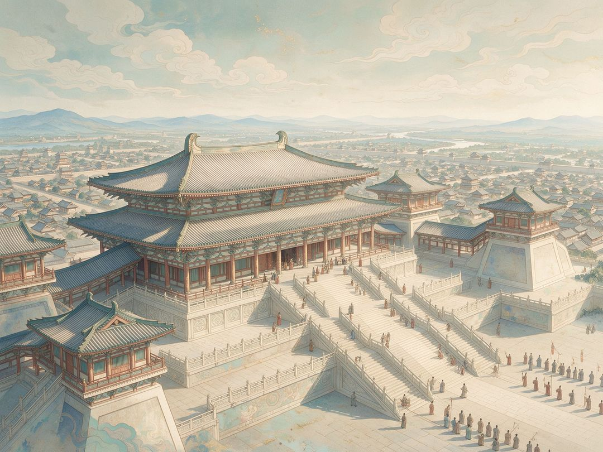
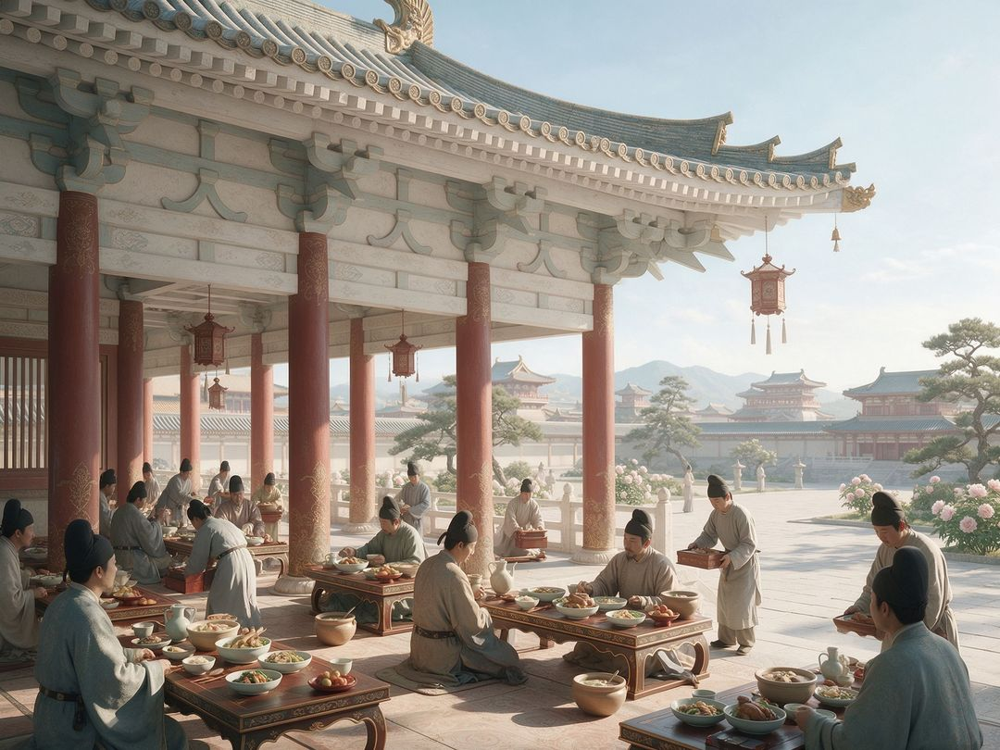
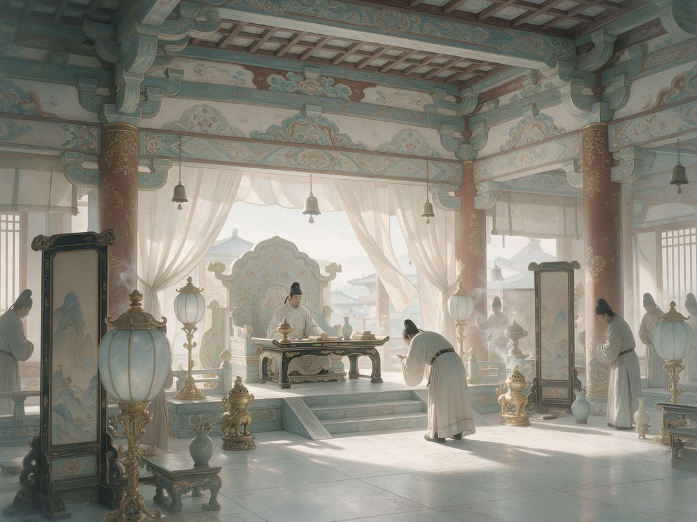
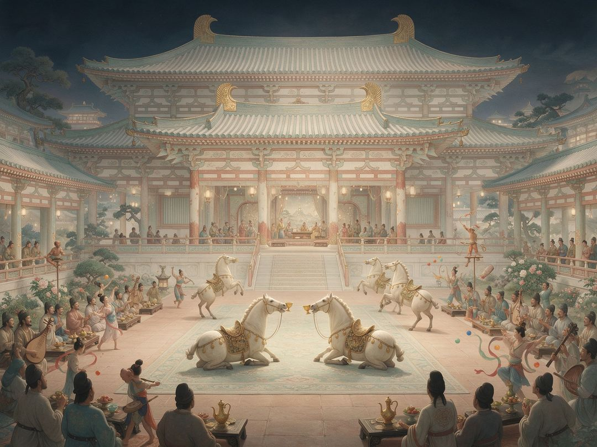

景点概览
大明宫是唐长安城「三大内」中规模最大的皇宫，又称东内，坐落于龙首原高地。始建于贞观八年（634），龙朔三年（663）建成启用，唐代共17位皇帝在此理政、历时两百余年。宫城约3.2平方公里，约为北京故宫的4.5倍。如今宫殿原址上建成国家遗址公园，以夯土遗址保护与展示为主。
约3.2km²宫城面积
17位理政皇帝
200余年历时
约4.5倍相当于故宫
历史沿革
唐代营建
634年·贞观八年
始建永安宫
唐太宗为太上皇李渊修建避暑夏宫，十月动工，初名永安宫。
635年·贞观九年
改名大明宫 · 停工
李渊驾崩，工程停工；正月改名大明宫，宫殿并未完工。
662年·龙朔二年
大规模营建 · 蓬莱宫
高宗患风痹，以太极宫内湫湿，乃修旧大明宫，改名蓬莱宫。
663年·龙朔三年
竣工 · 高宗迁入听政
宫殿建成启用，高宗与武则天迁入，成为大唐统治中心。
盛唐气象
705年·神龙元年
复名大明宫
恢复「大明宫」之名，成为唐代皇帝主要听政与寝居之所。
由盛转衰
755年·天宝十四载
安史之乱 · 首次战火
长安沦陷，大明宫首次遭受兵燹，盛唐由盛转衰。
唐末凋零
880年·广明元年
黄巢入长安
大明宫再遭劫掠焚毁，晚唐王室权威进一步衰落。
904年·天祐元年
朱温毁宫 · 迁都洛阳
拆毁长安宫室，木料沿渭水运往洛阳，大明宫化为废墟。
遗址新生
1961年
第一批全国重点文保
大明宫遗址被国务院公布为第一批全国重点文物保护单位。
2010年10月
国家遗址公园开园
大明宫国家遗址公园正式建成开放，以大遗址保护与展示为核心。
2014年6月
列入世界文化遗产
作为「丝绸之路：长安—天山廊道的路网」遗产点列入《世界遗产名录》。
2020年12月
国家5A级旅游景区
大明宫旅游景区获评国家5A级旅游景区。
大明宫中轴动线示意
北部后寝
三朝中轴
御道·龙尾道
宣政门
紫宸门
入后寝
西通麟德殿
北出玄武门
示意动线，非真实地理比例。依据考古探明的中轴对称格局绘制，用于展示三朝制度与后寝分区关系。
必看亮点
丹凤门遗址保护建筑
五门道形制为唐代城门最高等级，门式保护建筑覆盖原址。
含元殿遗址
踞龙首原高地，龙尾道迤逦而上，元日冬至大朝会在此举行。
宴饮接待
麟德殿遗址
前中后三殿串联，皇家赐宴、接见外国使节的重要场所。
后寝园林
太液池遗址
北部皇家园林湖泊，池中堆蓬莱山，帝后日常游赏之所。
镇馆看点
大明宫遗址博物馆
全地下建筑，藏1:15微缩大明宫全景沙盘与全息投影。
中轴朝堂全景
沿南北中轴线外朝、中朝、内朝依次递进，前朝后寝典范。
关联数字剧场

丹凤门
龙鳞 · 启程鳞
大明宫正南门，五门道、天子由此出入，被誉为盛唐第一门。
进入剧场 →

含元殿
龙鳞 · 朝会鳞
外朝正殿，龙尾道三折而上，元旦冬至大朝会于此。
进入剧场 →

宣政殿
龙鳞 · 廊下鳞
中朝正殿，朔望大朝、殿试册封之所，退朝百官领廊下食。
进入剧场 →

紫宸殿
龙鳞 · 召对鳞
内朝正殿，群臣入閤，君臣近距离议政。
进入剧场 →
太液池
龙鳞 · 池苑鳞
后寝中心，一池三山、蓬莱在望，皇家游宴赋诗之所。
进入剧场 →

麟德殿
龙鳞 · 盛宴鳞
三殿相连的宴饮大殿，大宴群臣、接见外宾，舞马百戏毕陈。
进入剧场 →
玄武门
龙鳞 · 归愿鳞
大明宫北门，云阙在此辨明玄武门之变误会，集齐七鳞投龙祈愿。
进入剧场 →
史料引用
典籍《唐会要》
卷三十 · 大明宫
贞观八年十月，营永安宫。至九年正月，改名大明宫……至龙朔二年，高宗染风痹，以宫内湫湿，乃修旧大明宫，改名蓬莱宫。
记载大明宫始建、改名与龙朔营建始末。
典籍《全唐诗》
卷一百二十八 · 王维《和贾至舍人早朝大明宫之作》
九天阊阖开宫殿，万国衣冠拜冕旒。
诗写大明宫早朝威仪，为盛唐宫廷气象名句。
考古报告国家文物局 · 陕西唐大明宫遗址
官方公布中轴线为丹凤门—含元殿—宣政殿—紫宸殿—太液池。
考古报告中国社会科学院考古研究所
历年发掘麟德殿、含元殿、玄武门、太液池等遗址，确认四十余处殿阁位置。
近现代研究陕西省地方志办公室
宫区面积3.2平方公里，约为故宫4.5倍；唐代17位帝王在此朝寝。
到访信息
开放开放时间以景区官方公示为准
门票遗址公园开放区域及收费展馆门票以官方公示为准
交通地铁4号线含元殿站/西安站；公交至大明宫丹凤门站；新城区太华南路